Mininotes guide
Everything Mininotes can do, on the phone and on the PC, in plain words and drawings. At the end: what happens under the hood, and every hidden gesture in one table.
Written for Mininotes 0.4.057. The words in bold are the app's own labels, as you see them on the screen in English.
PhonePC how to reach it on each
Hidden nothing on the screen shows it: now you know
Start
Install it, open it, choose your language. There is no account to make and nothing else to install.
Install
Phone Android 9 or newer. Press Download for Android on the home page (or scan its code), then open the file. Android asks whether to allow installing from your browser; you can switch that off again afterwards.
PC Windows 10 or 11. Press Download for Windows and open the installer. It needs no administrator rights, can put a shortcut on the desktop if you tick it, and ends with Launch Mininotes. A zip you extract anywhere is also on the releases page.
Every Android release is signed with the same Mininotes key. The README on GitHub gives its fingerprint, if you want to check it.
First start
- Mininotes asks for your language first, with your device's own already picked. It asks again at each start until you confirm one.
- Then you are on Home: a README note in your language and a Photos folder are already there. Write straight away.
- Nothing else is needed: the small network node that carries your notes is inside the app.
- When you have a moment, think about the lock (Privacy and the lock) and a backup (Backups).
Language
Phone The menu ⋮, then Mininotes, then Language; or the top of Settings.
PC ≡ Menu, then Mininotes, then Language; or the top of Settings….
Write
A note is a ruled page. It is saved as you type: there is no save button.
The page
- Saved as you type. On the PC, Ctrl+S saves at once if you like.
- Write anywhere below the last line. Hidden About a screen of empty ruled paper waits below the last line. Tap or click any empty line and the cursor goes there. Nothing is written until you type.
- The keyboard (phone) comes only when you tap or double tap. Holding a word selects it without bringing up the keyboard. Hidden
- Zoom the whole screen (phone) with two fingers, from 1× to 4×, and move around with two fingers. Hidden
- Text size of a note: the A− and A+ ladder at the top of the note's menu.
- Writing lines on or off: a switch in the note's menu, for this device only.
- Limits: 24,000 characters per tab and 100,000 per note. A warning line shows from nine tenths. What cannot fit, or what was deleted elsewhere while you wrote, becomes a note such as "Plan (continued)" or "Plan (copy)", so nothing is lost.
- Pasted text keeps its paragraphs.
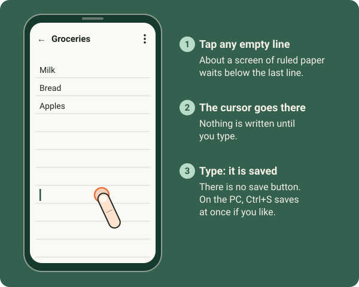
The title and the tabs
Phone Tap the title to rename the note. Hold the title for the note's menu. Hidden Hold a tab to rename or remove it; hold it, then carry it, to move it. Hidden
PC Type in the title field, or press F2 on a note's icon. Right-click a tab to rename or remove it; drag it to move it. Hidden
A note can hold several pages, like index cards: + Add a tab on the band under the title. Move left and Move right are in a tab's menu too. Each tab remembers where your cursor was and how far you had scrolled.
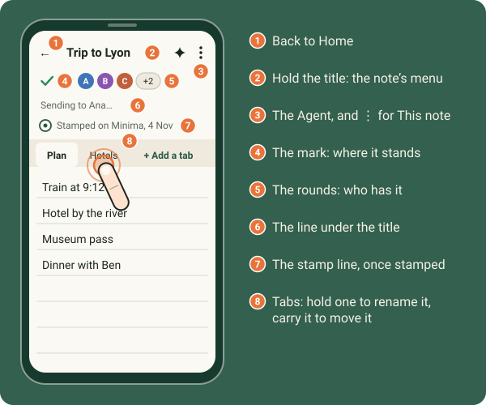
Bold, italic, underline and links
- Type the marks around the words: two stars on each side for bold, one star for italic, two underscores for underline. Or press Ctrl+B, Ctrl+I or Ctrl+U. The marks themselves are hidden on the page. Hidden
- On a phone without a keyboard, select words: Bold, Italic and Underline are beside Copy.
- A tap or a click on a link opens it.
Phone Hold a link: Copy link, Open link and Share link come up under your finger. Hidden
PC Right-click a link: Open link and Copy link. Hidden
Find in this note
Phone The menu ⋮, then Find in this note. Move with ▲ and ▼, close with ×.
PC Ctrl+F over a note, the note's ⋯, or a right-click on the page. Enter or F3 next, Shift+F3 previous, Esc closes.
It says "1 of 5", for example, and after the last match it moves on to the next tab. A note opened from a search opens at the first match, with the same bar.
Undo, copy, translate
- Undo in the page: Ctrl+Z and Ctrl+Y on the PC. An Undo … row at the top of the menus undoes a move, a rename or a trip to the bin, on both.
- Copy the text (PC) is in the note's menu.
- Translate…: see Languages and translation.
- Who wrote what can be shown in each person's colour: Settings, Writing colours, Show who wrote what.
From other apps, pictures and voice
Phone In any app's share sheet choose Add to Mininotes: New note with it, Temp, Into a folder or a note, or Send to someone. Paste a picture with the keyboard's picture button or Paste (Android 12 or newer). Voice typing works while Keyboard learns from my notes is on in Settings (it is on by default); off means incognito, with no voice typing.
PC Ctrl+V pastes a picture into a note. Drag files from Explorer onto a note to attach them.
Organise
Home holds your notes and folders as icons, each where you put it, on as many pages as you like.
Make something: the round +
The round + at the bottom right of Home, of every folder and of every place offers Note, Folder, Take a photo (phone), From this device… and From another device….
Every icon's menu
Phone Hold the icon. Hidden
PC Right-click it, or select it and press the Menu key or Shift+F10.
The menu has everything: Colour with its strength, Icon…, Sync and sharing, Move to…, Add to the dock, Add to favourites, Temporary…, Archive and Move to bin….
Hold (phone) or right-click (PC) an empty space on Home for Home's own menu: Create and Find rows, Home's colour, Undo, Sync now, the Show on Home switches and All pages. Hidden
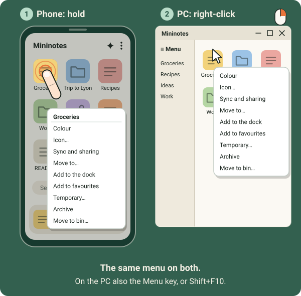
Move things: carry them
Phone Hold an icon, then move your finger without letting go. Hidden
PC Drag it with the mouse.
- Let go in an empty place: it stays there. Gaps are kept, and the other icons keep their places.
- Let go on a folder: it goes inside. Pause over a folder and it opens, so you can go deeper.
- Let go on another note: a new folder is made, holding both.
- While you carry, a strip across the top offers ★ Favourite, Temp, Archive, Bin and Share (Send, for a file). Let go on one: done, with no menu.
- Carry an icon onto the dock to dock it.
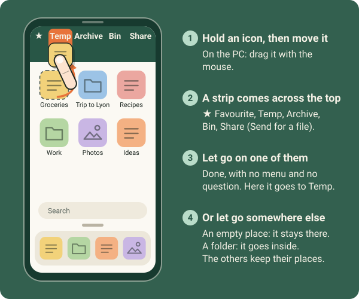
Folders
Folders hold notes and other folders, as deep as you like. An open folder shows as a card over Home.
- Carry an icon out of an open folder: the card steps aside so you can drop it on Home. Hidden
- Pause over the card's ‹ name while carrying: you go up one level. Hidden
- New things follow the look of the folder they are made in.
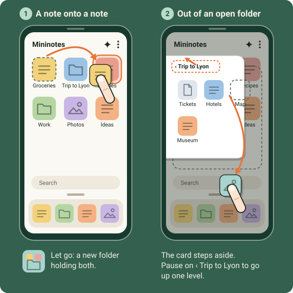
Pages
Home has pages in every direction: above, below and to the sides. Hidden
Phone Swipe to move between pages. Double tap empty Home to go back to the main page. Pinch Home to see all pages at once, then tap one to go there. Hidden
PC The wheel; Shift+wheel or the touchpad sideways; drag the empty space; Page Up/Page Down, and Ctrl+Page Up/Page Down sideways. Double-click empty Home or press Ctrl+Home for the main page. Ctrl+wheel shows all pages. Hidden
- A new page: carry an icon to an edge of the screen and hold it there. Carrying above or below the rows turns the page. Hidden
- Move a whole page: with all pages showing, hold a page still (phone) or drag it (PC). Onto another page, the two swap; onto the main page's place, it becomes the main page. Hidden
- All pages and Back to the main page are also in Home's menu.
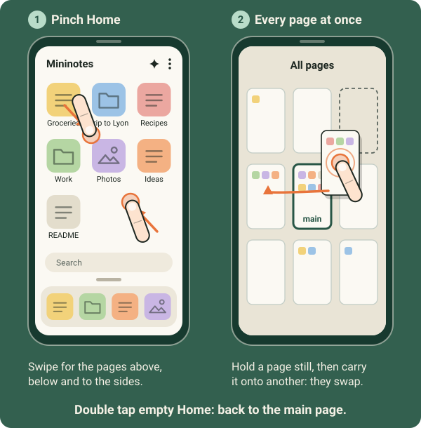
On the PC: several at once, and the keyboard
- Choose several: Ctrl+click or Shift+click. The menu then acts on all of them (Save, Copy, Send, Move to bin); Esc lets go. Hidden
- The keyboard on Home: Tab and the arrows move, Home/End go to the ends, Enter or Space opens, F2 renames, Delete puts in the bin, Ctrl+arrows nudge an icon, Ctrl+N makes a new note, Ctrl+W closes, Esc goes back a step. Hidden
- Paste on Home: Ctrl+V on Home, in a folder or in Temp keeps the picture or the files from the clipboard there. Hidden
- Drag files in from Explorer: onto a note (attached), a folder or Temp's card (kept there), Home, or elsewhere (the Send box opens). A box says what was not taken, and why.
- Drag out to Explorer or the desktop: it is copied. Hold Shift and it moves (Mininotes' copy goes to the bin). Hidden
- The logo takes you Home; on Home, it opens My profile. Hidden
Colours, icons and pictures
- Colour in a thing's menu, with a slider for its strength. Icon… chooses its face.
- On the phone, tap the face before a note's title to open the icon picker.
- Icon…, then Choose a picture… puts a picture on it. Reframe it with one finger (move), two fingers (zoom) and quarter turns.
- On shared things, For: Everybody or Only me says who sees the colour.
- Home's colour, in Home's menu, colours the whole app.
The dock and favourites
- The dock is the row at the foot of Home: Add to the dock and Remove from the dock in a thing's menu. Each device has its own dock. It scrolls sideways when full: swipe on the phone, the wheel or the bar on the PC. Hidden
- Add to favourites also docks it. A Favourites icon on Home holds them all; reorder them by carrying them inside its card.
Search, Tree and Show on Home
Phone The search bar above the dock opens a box that also offers your Favourites and Recent. Tree (menu, Find) shows everything at once, in a box.
PC Ctrl+F on Home, Ctrl+Shift+F anywhere. Tree opens as a side panel (Ctrl+B outside a page), with a divider you can drag or fold.
Search finds notes, folders and files by their words; in Chinese, Japanese or Korean one character is enough. Show on Home (in Settings, or Home's menu) chooses which places Home shows: Dock, Search, Recent, Temp, Shared with me, Archive, Bin and README. A place that is off is still in the menu under Places, and Hide from Home is in each place's menu.
The Photos album
A Photos folder is on Home from the start, and any folder can be shown this way: Show as an album in its menu. Tap a square to see the photo large. The album's + offers Add photos… and Take a photo….
Phone Swipe for the next or previous photo. Hidden
PC ← →, Home, End, and Esc to close.
Temp
Temp is for things you need only for a while, and for passing things between your own devices and the people you choose. What is in Temp goes to them, and is gone everywhere, at the same moment, when its time is up.
- Temp's menu: Things stay (from 15 minutes to 24 hours), Send what is in Temp, then Who it goes to…, Sync Temp now, and Also show on Home.
- Drop a thing on Temp and it becomes temporary, with no question.
- Temporary… in any thing's menu chooses how long, or Until I delete it.
- A notepad that stays: switch on Temp: a notepad that stays in Settings, or choose Stays in Temp in a note's menu. The note stays in Temp; its words are emptied after Temp's time, and a version is kept first.
- Opening Temp clears its "new" marks. A tap on Temp's mark syncs it now.
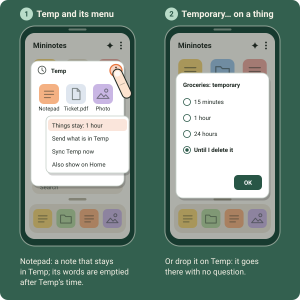
Archive and bin
- Archive puts a thing out of sight; Move to bin… deletes it. Or drop it on their icons.
- Inside both: Put back puts it back where it was. In the bin: Delete for good and Empty the bin….
- A file taken out of a note with its × goes to the bin at once, and leaves the note on every device. Put back brings it back everywhere.
Recent
What you opened lately, newest first. Taking something off Recent deletes nothing.
Phone Recent is a place on Home (or menu, Places, Recent). Hold a line for Remove from Recent. Settings, Recent keeps says for how long.
PC A column down the side, with ≡ Menu at its top. Right-click a line for its menu and Remove from Recent. Drag the divider to resize or fold the column.
Recent as cards
Phone On Home's main page, swipe up from the dock, or tap the small handle just above it. Hidden
PC The button beside the search, or Ctrl+Tab: keep Ctrl held, Tab moves on, Shift+Tab back, let go of Ctrl to open. Hidden
- Up to 20 cards, newest first. A note's card shows its colour, face, title and first lines; a folder's, its face and name. Scroll sideways and tap one to go there.
- Close a card: throw it up. It leaves Recent until you open that thing again. Or hold a card for Open and Close. Hidden
- Put the cards away: tap outside them, or press Back.
- On the PC: ← →, Enter or Space opens, × or a middle click closes a card, a right-click gives Close and the menu, Esc puts them away.
- Temp is never a card.
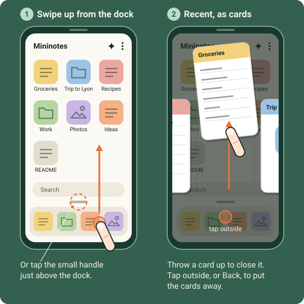
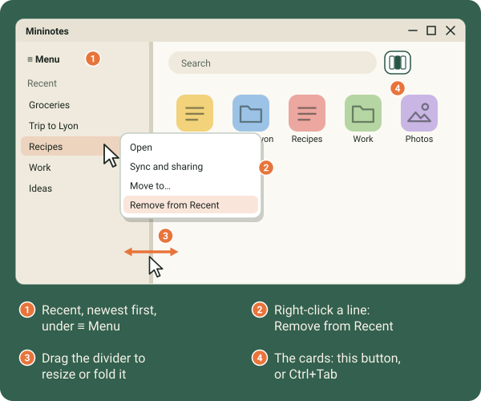
Your own devices
Link your phone and your PC once. From then on, what you share with your devices keeps itself up to date on all of them, both ways, a few seconds after you stop writing.
Link a device
- Open People and devices (menu, Sync and sharing, People and devices…) and tap the one round +. The camera opens.
- Scan the code of the other device. No camera? Paste a link, Open a picture, or Show my code so the other one scans you.
- What is it? Choose One of my devices.
- Also link it with: your other devices, already ticked, so they all know each other.
- What it gets: Nothing yet, Admin, Can write or Can read of everything. Nothing yet means only Temp and what you share with it.
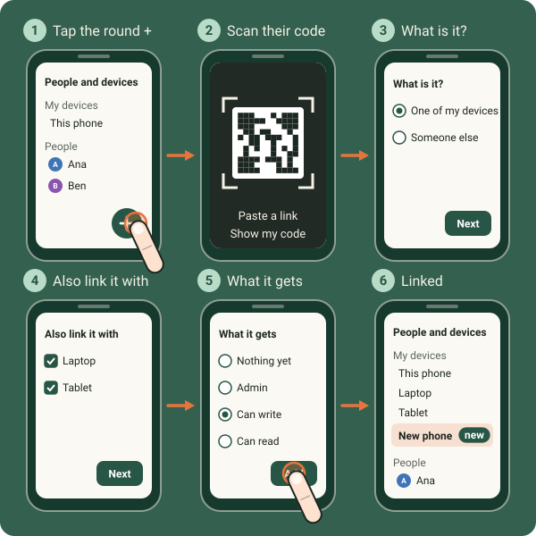
- Later: tap a device's line and it drops down to Admin, Can write, Can read or Remove (asked first).
- Not linked here yet: a device another of yours already knows shows under My devices with Link, with no code to scan. A person's line may ask One of your devices?, with This is my device.
- Each device keeps its own layout and its own dock. Moving a note on one does not move it on the other.
- The same on all my devices: the Integritas key (My profile, Stamping, Also on my devices) and your relays (Settings, Relays, The same on all my devices).
- Mininotes on your PC… and Mininotes on your phone…, in the Mininotes part of the menu, give the other app with a code or a link.
- Forget, on a device's page, forgets it. It unshares nothing.
People and devices, My profile
People and devices
Phone and PC Menu, Sync and sharing, People and devices…; or My profile, Manage….
It lists My devices, People (each person's devices indented under them), Groups and Blocked senders. Hold a row (phone) or right-click it (PC) for Their page, Remove, Add to group and Who has it…. Hidden
A person's page: their name and colour, Accept everything without asking, Picture…, what you share with them, Send files… and Remove this person.
My profile
Phone Menu, Sync and sharing, My profile…; or tap the app's name in Home's bar. Hidden
PC Menu, Sync and sharing, My profile…; or click the logo while on Home. Hidden
- Your code comes first, for others to add you.
- You: your name, this device's name, your picture and your colour. Your name and picture go to the people you are paired with.
- Your Parlons! address; Stamping (the Integritas key, Save, Also on my devices); People and devices, Manage…; Backup.
- On the PC: Text size for the whole app, from 80% to 180%, with Restart now; and Describe what each thing does, the short line shown when the pointer rests on something.
Where everything stands
A small mark on every note, folder and icon says whether it has reached everyone.
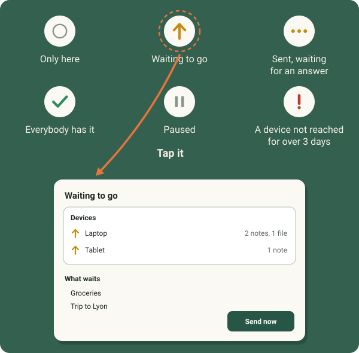
- An empty grey ring: only on this device. An amber arrow: waiting to go. Three amber dots: sent, waiting for an answer. A green tick: everybody has this version. Two grey bars: paused. A red !: a device not reached for more than three days. Settings, What the marks mean says the same.
- A mark for the whole app sits in the top bar, before the Agent.
- Tap the amber mark for the Waiting to go box: a Devices card (one row per device, with what it still lacks), What waits, and Send now.
- A tap on another mark syncs now (Temp) or opens the Share box. On the phone, holding a mark opens the Share box. Hidden
- The line under a note's title says Saving…, Sending to Ana…, or Could not reach Ana with see why. A tap on it does what a tap on the mark does.
New, and the trouble strip
- "new" marks show on notes, files and the folders holding them, also for changes from your own devices.
- New, at the top of Home: one line per thing; a tap opens it, its × clears it, and Mark all as seen clears them all. Hold (phone) or right-click (PC) a line for Show where it is and Mark as seen. Hidden
- The trouble strip under the bar appears when something is wrong with a contact. What to do offers Try now, Their page and Scan their code; × closes it.
- History… (menu, Sync and sharing): lines such as "Plan reached Laptop, direct", "through your relay" or "through a public relay", and where things came from, for 30 days. It never holds the words of your notes, and never anything from a private space.
- Sync now and Sync parameters… are at the top of This note and in Sync and sharing.
Notifications and the tray
Phone One What arrived notification, with a count on the app's icon. Shared with you and help requests have their own.
PC The tray icon offers Open and Exit Mininotes, and says what arrived while the window was away.
Files, photos, recordings, big files
Attach, take a photo, record
Phone The paperclip (or the + note tools on a short screen): Show files, Attach a file…, Take a photo…, Record audio.
PC The paperclip menu: Attach a file, Take a photo, Record audio, then the note's files with boxes to tick, Select all, and for those ticked Save on my computer…, Stamp on Minima… or Move to bin.
- Take a photo on the PC opens Windows' own Camera. Photos it saves in the next minutes come straight into the note. Hidden
- Record audio: up to about 45 minutes on the phone and about 17 on the PC, 16 MB at most. Leaving the note keeps recording.
- Files by tab: a file belongs to the tab open when you added it. Move to tab moves it.
- Previews: a PDF's first page, the first lines of office and text files, drawn by Mininotes itself.
- Photos are made smaller when added, so they travel light. Turn that off in Settings, Pictures and files.
- Open a file in its program: changes you save there come back into Mininotes and travel.
A file's menu
Phone Hold the file.
PC Right-click the file.
Open in its program, Open with…, Rename…, Replace with another file…, Copy (the file itself, to paste in another app), Send with another app… and Choose several… (phone), Save on my computer… or Save on my phone…, Send to a device…, Stamp on Minima…, Move to another note…, Move to tab and Move to bin.
Big files
Files from 16 MB up to 2 GB go with Send to a device…, only when the two devices can reach each other directly (on the same Wi-Fi, for example). The other side gets a notification with Refuse and Save (phone) or a box (PC). The file is saved into Downloads; it is not kept in the app. On the PC, a file over 25 MB that cannot be added to a note offers Send to a device… instead.
Files on the PC
On the PC only: files and folders that stay where they are on your disk, and still travel.
- Share a file through Mininotes… (in Sync and sharing): the file stays where it is and opens in its own program. Each time you save it, that version goes to your devices. Its menu: Linked to…, Open in…, Open with…, Show in Explorer, "Synced with the file on this PC", and Remove from Mininotes…, which deletes nothing on disk. If it changed in two places, Which version to keep… asks you.
- Sync a folder of this PC…: everything in that folder shows in Mininotes, on a tile with arrows. Its menu: where it is on this PC, Show in Explorer, Keep it inside only, Remove from the app.
- Save on my device…: a note or a folder kept as Markdown files in a folder you choose. If a file is lost, Find it…; if both changed, Keep Mininotes' words or Keep the file's words.
- Open a Markdown file…, or drop a .md file anywhere but on a note: the note is kept in that file.
- Edit a file…: any text file in a simple window like Notepad. Nothing is kept or synced.
Versions
- Versions…, in This note: read any earlier version, then Put this back. Putting one back is kept as a new version, so nothing is lost.
- A hundred versions are kept per note, and your own newest 30 are always kept.
- From the archive and the bin, Put back puts things back where they were.
Backups
Copies of your whole notebook, always sealed, made by themselves when you want: into a folder, or to another of your devices, such as your own server.
Phone Settings, Backup; or My profile, Backup; or menu, Backup, Backups….
PC The same three ways: the Backup part of Settings…, My profile, or ≡ Menu, Backup, Backups….
- Each place has its card, with Back up now, Change… and Remove…. Under them: Add a place… and Add from a backup….
- Where: A folder, or one of your devices. A device gets the backup sealed, when it can be reached directly, and cannot open it. One that does not get there is tried again half an hour later, going on from where it stopped.
- What: Everything, or Everything but the files.
- When: only when you ask; each day, each week (on a day) or each month (on a day from 1 to 28), at an hour; or each time Mininotes closes (on the phone: when you leave it, at most once in 10 minutes).
- How many: the newest 1 to 50 are kept (5 unless you change it).
- Always sealed: with the notebook's lock, with a password for the backups, or with 12 words made for the backups (three of them are asked back, to be sure you wrote them down).
- If nothing changed, the backup is skipped. A failed one is tried again after 30 minutes.
- After 30 days without a backup, the bar reminds you.
- Never in a backup: private spaces, the Integritas key and the Agent conversation.
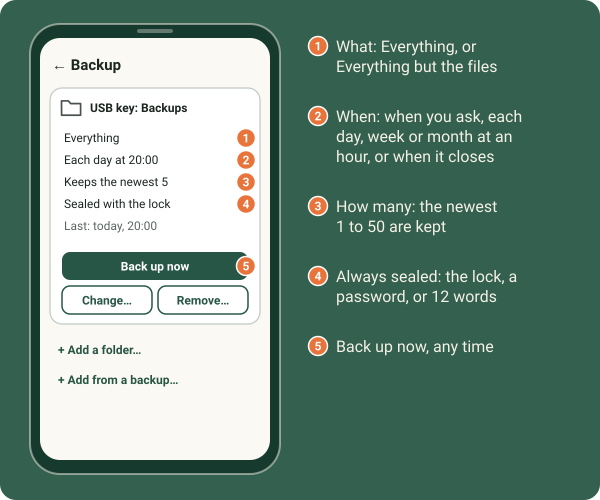
On the PC, backups your other devices send to it are kept in Documents, Mininotes backups, each device in a folder of its own: From your other devices, on the Backup page, changes where.
Coming later: a key file, and backups for "this device only".
Your own server
A small Mininotes for a Linux server: always on, one of your devices, and it only keeps your sealed backups. It cannot open them. Your own server…, on the Backup page, shows the same steps.
- Install it. On the server, as root:
curl -fsSL https://raw.githubusercontent.com/mininotesorg/server/main/install.sh | sudo bash
If your provider has a firewall of its own, open TCP port 9601 there too. - Pair it. Run
sudo mininotes-server pair. It shows a code and a link for 15 minutes. In Mininotes: People and devices, +, scan the code or Paste a link, then One of my devices and Nothing yet. - Back up to it. Backups…, Add a place…, then the server under Where.
It tells your devices that it only keeps backups, so they send it nothing else: no note, no Temp, nothing you share. sudo mininotes-server status lists what it keeps. The full guide on GitHub.
The Agent
Ask it about Mininotes, or have it do simple things for you. It runs on your device, with no server.
Phone The Agent symbol beside ⋮, on Home, in folders and in notes.
PC In the top bar, or ≡ Menu, Agent…, or Ctrl+K.
- It answers from the help kept inside the app.
- It does tasks said in English or French: "what is new?", "what is on my todo list?", "add milk to Groceries", "share Groceries with Ana", "add someone", open, find, a new note, the dock, favourites.
- Before anything that changes a note or reaches other people, it shows you what it will do. Take me there goes to the right place.
- New conversation and Full screen. The conversation is kept 3 hours, locked with the notebook, and never while a private space is showing.
- A press outside its box closes it. Hidden
Stamp on Minima
Proof, on the Minima blockchain, that a note or a file existed exactly as it is, at that moment. Only its fingerprint leaves your device. It needs an Integritas account.
Phone and PC Stamp on Minima…: one line in a note's or a file's menu, in This note, on an attachment's card, and for the ticked files in the PC's paperclip menu.
- The window shows the fingerprint (SHA-256) and the steps: Stamp, Look for it on Minima, Verify again, Open this version, Open the PDF report, Attach the PDF report, Compare with a fingerprint… and Stamped before.
- A stamped note has a line under its title: "Stamped on Minima", the date and the block; or "Changed since…" with Stamp this version…. A note's stamp covers its title, an empty line, then its text.
- A stamped file wears a small stamp on its icon.
- Compare with a fingerprint…: paste a SHA-256 and see whether it is the same. This works offline.
- Stamped on Minima…, last in Find, lists what was stamped. Its + stamps a note or a file, even a file from outside Mininotes.
- Stamps travel to your devices and with a shared thing. Your API key goes in My profile, Stamping.
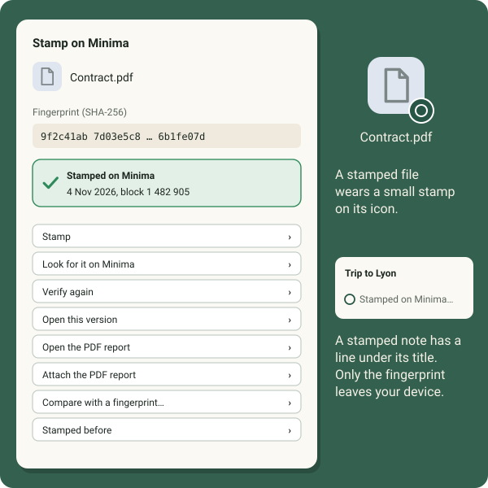
Privacy and the lock
- No server, no account, no tracking. Notes are kept on your devices and go only to the people and devices you choose.
- Sealed end to end. Every note and file is sealed for the device it goes to. See Under the hood.
Lock Mininotes
Phone Settings, Security. It opens with your fingerprint or your screen lock.
PC Settings…, Security. It opens with Windows Hello or your password.
- The lock encrypts the notebook, its files and your backups on the device.
- 12 recovery words are a spare key: write them down and keep them somewhere safe.
- Lock again when not used locks it after a while.
- Without the lock, notes are not encrypted on the device.
- In private pages and password fields the keyboard is in incognito mode: it learns nothing.
Private spaces and the help request
Spaces that nothing on the screen shows, opened with a code typed in a note. The codes are written here in words on purpose: typed into a note, the real code would act at once.
A private space
- Open or make one. Hidden In any note, type the word private, then two slashes and a colon, then your password, all together with no spaces, and press Enter. The code leaves the note the moment the colon is typed, and a password box opens.
- A new password, typed twice, makes a new, empty space. Every password is its own separate space, and nothing anywhere records how many you have. Write each password down: nobody can recover a forgotten one, not even with the 12 recovery words.
- Inside: its own colour and a lock beside Private, so you always know where you are. The + makes notes, folders and files. The eye by the password shows it while you hold it. Back closes the space.
- Delete this private space is in its menu.
- A space holds about 64 MB, stays on this device only, and closes after five minutes without use.
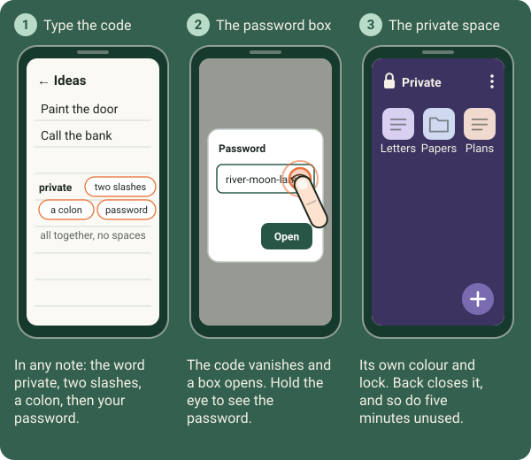
The help request
A help request sends your location, and words you chose, to people you chose, the moment a private note is opened. It is for when someone might force you to open Mininotes. Hidden
- Set one: inside a private space, in one of its notes, type the word help, then two slashes and a colon, all together. A box asks who to tell and what to say.
- Never shown again, anywhere, once set: the box always opens empty.
- Take them away: type the word erase, then two slashes and a colon, in one of the space's notes. Every help request of that space is removed.
- Mininotes asks for the phone's location permission for this, and the phone shows when it is used.
Languages and translation
- Eleven languages: English, French, German, Spanish, Italian, Portuguese, Russian, Chinese, Japanese, Hindi and Persian, which reads right to left. Change it from the Language row (see Language).
- Translate… a whole note from This note, or selected words: in the phone's selection bar, or with a right-click on the words on the PC. Then Copy, Replace or Add as a tab.
- Translation runs on your device. A language pack is downloaded once, the first time it is needed; Settings, Translation lists them and removes them.
Settings
Phone The menu ⋮, Settings.
PC ≡ Menu, the Mininotes part, Settings…. Text size and descriptions are in My profile; Direct connections (the firewall) is on the PC only.
The phone's sections: Language, Security, Sync, What the marks mean, View, Show on Home, Pictures and files, Writing colours, While the pad is closed, How notes travel (Relays), Updates and Backup.
- Send changes: Right away, after 3 s, 10 s, 30 s or 2 min, or Off (a note then goes when you tap its mark). Sync automatically.
- Recent keeps, Shared with me goes to, three Temp switches, Text size of notes, Keyboard learns from my notes.
- Listen while the pad is closed, Keep listening while the phone sleeps, Let it say when a note arrives.
- Lock again when not used, Look for a newer version once a day.
- Relays: public relays on or off, your own relays (host and port, up to 8), and The same on all my devices. Anyone can run their own relay.
Updates
- Mininotes looks once a day for a newer version (you can switch that off). Update to v… then appears in the menu, and on the PC an Update button in the bar.
- The version dot: green, you have the newest; yellow, an update is out. A tap updates.
- On the PC, an update that did not finish is said at the next start.
- On the phone, Mininotes starts listening again by itself after a restart or an update.
- Uninstall Mininotes… (PC) offers a backup first, then keeps or deletes your notes, as you choose.
Feedback
- Feedback…, in the Mininotes part of the menu, opens a filled-in issue on GitHub, under your own name. Nothing is posted for you.
- Share the log (phone) or Show the log (PC): the log is kept on the device only, and goes nowhere unless you send it.
- Share Mininotes… and About… are there too.
- Or talk to us on Parlons!. A security problem goes privately to a security advisory.
Under the hood
How your notes travel, and what keeps them yours. You need none of this to use Mininotes.
No server
Each Mininotes carries its own Maxima node, the peer-to-peer network of Minima. Nothing else has to be installed, and there is no Mininotes server in between.
How notes are sealed
Each note is sealed for the one device it goes to, with a fresh key every time (P-256 key agreement, HKDF-SHA256, AES-256-GCM), and signed (ECDSA P-256). Whoever carries it can neither read it nor change it.
Two roads: the direct door, then relays
First the direct door: two devices on the same Wi-Fi find each other (a signed announcement on port 9601) and talk straight. Otherwise relays carry the sealed bytes: your own relays first, then public ones. "Only between my devices" uses no relay at all. History… says which road each thing took.
Proof of work
Every Maxima message carries a small proof of work, which costs a little processor time and battery. Much work went into sending less: only what changed, only when needed.
Receipts
A thing counts as delivered only when the far device itself answers. Until then it is tried again after 1, 2, 4 and 8 minutes, then every quarter of an hour; devices that can be reached are checked every minute or two.
Carriers
When one of your devices is off, a third device of yours can hold a sealed copy for it, which it cannot read. The PC keeps what comes for your phones, and the phones collect it from there.
Merging
Changes are counted, never timed, so a wrong clock changes nothing. Two people writing at once are merged line by line against the last text both had; where both changed the same lines, both are kept.
Only changes travel
Only the changed stretches of lines are sent, with a SHA-256 check. If anything does not match, the whole note is asked for again.
Versions
A hundred versions are kept per note, and your own newest 30 always survive.
Invitations
Connecting and sharing are invitations, accepted or ignored. Codes are links that start with mininotes://pair/. A pasted code shows six digits to compare; a scanned one needs none. One person can have several devices, and your own devices introduce each other.
Temp's clock travels
A thing's time in Temp travels with it, so every device deletes it at the same moment.
Files
Files are sent in pieces, offered at the direct door first. Over 16 MB they go only directly, in sealed pieces of 256 KB, with a pass valid for one day.
The lock
The notebook is an encrypted database (SQLCipher). Its keys are kept by the phone's Keystore or by Windows' own protection; the 12 words are a spare key. Phone and Windows cloud backups leave the app's storage out.
Backups
Always sealed, in .mnbackup files. Private spaces are never included.
Private spaces
Nothing records how many there are. They are never synced, never written out as Markdown, and never in History.
Stamps
Only the SHA-256 fingerprint leaves the device. It goes into a Minima transaction; the proof is the block, the date and the transaction. A PDF report is optional.
The Agent
It runs on the device, with no language model and no server. It answers from the help texts kept in the app.
Translation
The same engine as Firefox's translation (Bergamot), on the device. Language packs are downloaded once and checked.
Previews
Drawn by Mininotes itself (PDFBox, PdfRenderer), never by Windows' thumbnails, so no picture of your files is kept outside.
What uses the network
The Maxima node; the daily look for a newer version; Integritas when you stamp; translation packs the first time they are needed. Nothing else.
What never leaves the device
Private spaces. The log, unless you send it. What you say to the Agent. Each device's layout, dock and writing lines switch. A note or file goes only to the devices and people you chose.
Listening while closed
On the phone, a service with its own notification keeps listening when Mininotes is closed. Android's battery saving can slow it down.
Faces and translations
Icons come from the Lucide set; a picture on a thing is a small thumbnail of at most 32 KB. A test fails if any English phrase shows on a screen in another language.